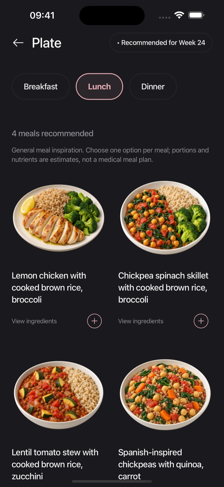
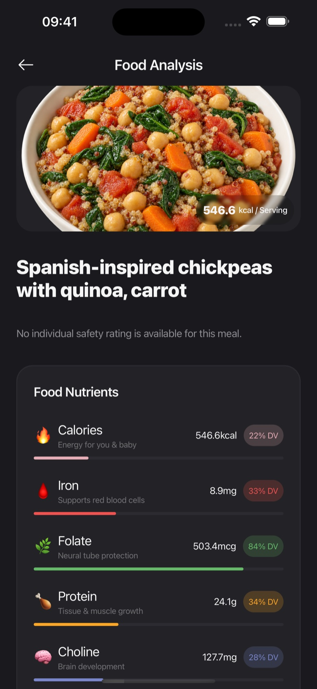
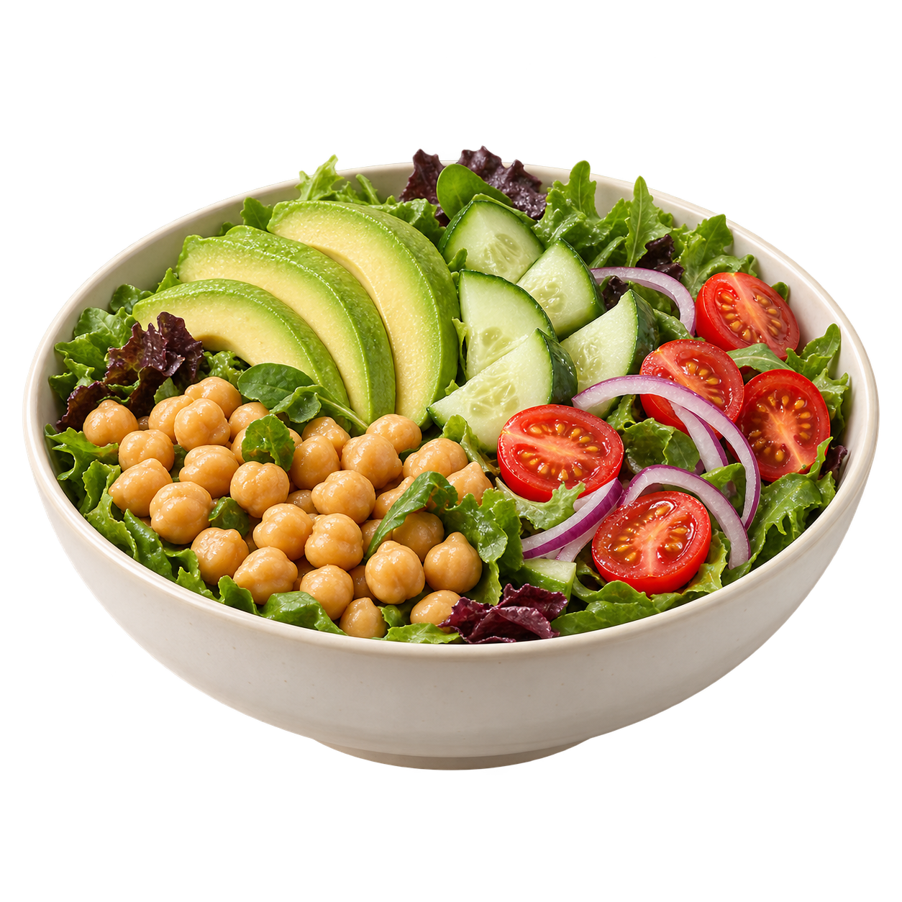

Your stage.
Your plate. Your pace.
Meal ideas that fit your pregnancy.
Little moments that help you feel more in tune.
Getting started should
feel this simple.
Your tastes. Your routine. Your pregnancy week.
Embryly brings them together in one place.
Make it yours.
Share your pregnancy stage, food preferences, and the ingredients you avoid. Update them as life changes.
Find your next meal.
Explore breakfast, lunch, and dinner ideas matched from our meal catalog. Check ingredients and preparation notes.
Keep a gentle rhythm.
Log meals, cravings, and water. Follow your pregnancy week and keep your everyday moments together.
Good food ideas.
Less daily deciding.
Some days you want something new. Others, something familiar. Find meal inspiration for your preferences and pregnancy week, with ingredients and estimated nutrition in view.
Meal suggestions are general inspiration, not a complete or prescribed daily diet. Always check labels and preparation.
How recommendations work

A closer look
at what’s on your plate.
Scan a food photo or barcode to explore AI generated food information. Understand what to check, then make decisions with your own care team’s advice in mind.
Start with the food safety guideAI can be wrong. A photo cannot verify allergens, cooking temperature, freshness, or contamination.
Every sip.
A little easier to remember.
Log your water in ounces and see your daily total fill up.
Your little one.
Your unfolding story.
A little closer with every new week.
A companion to your day.
Your care team comes first.
Embryly is a general wellness app, not a medical device. Our illustrations do not show your actual baby or measure their development. For personal nutrition or pregnancy advice, speak with your doctor, midwife, or registered dietitian. Read about our sources and limits.
A little support,
on your terms.
Choose the subscription that fits your rhythm.
Weekly
For taking things one week at a time.
- Personalized meal inspiration
- Food photo and barcode scans
- Meal, craving, and water tracking
- Weekly baby illustrations
Yearly
ONE YEAR, ONE PLANMore room for the journey ahead.
- All the features in the weekly plan
- Preferences you can update anytime
- Your daily food journal
- One annual subscription
Preview prices from the app’s current US defaults. Confirm the price, currency, any trial, and renewal terms in Apple’s purchase screen. Subscriptions renew automatically unless canceled through Apple. Deleting the app does not cancel a subscription.
Good reads.
For real life.
Can I eat this? A calmer guide to food safety in pregnancy.
What to check at the shop, in the kitchen, and before you take that first bite.
Read the guide ↗
A pregnancy meal plan with room for real life.
A flexible way to think about breakfast, lunch, and dinner when your appetite keeps changing.
Read the guide ↗Does Embryly replace my doctor?
No. It offers general food information and tracking, not diagnosis, treatment, or a clinical meal plan. Follow your care team’s advice, especially for allergies, gestational diabetes, or other health conditions.
How does my meal plan become personal?
The app matches a catalog of meal ideas to your saved preferences, ingredient avoidances, pregnancy week, and recent suggestions. Changing your preferences changes future matches. It cannot guarantee a suitable option for every combination of restrictions.
Can a scan tell me a food is definitely safe?
No. AI can misidentify food or miss ingredients. It cannot inspect food handling, detect bacteria, or verify a cooking temperature. There is no independently validated overall accuracy percentage. Check the label and preparation, and consult a professional when uncertain.
Are the baby images medically accurate?
They are artistic, AI assisted illustrations for general orientation, not scans of your baby or precise week specific anatomy. Size, appearance, and developmental timing vary. They cannot assess growth or wellbeing.
What happens to my food photos?
Scans are processed by our service and OpenAI. Saved photos are stored using Supabase, and the current app uses public image URLs. Do not include faces or sensitive documents in food photos. See our privacy policy for details and deletion requests.
A new chapter.
A little company.
Your pregnancy, your preferences, and your everyday food moments. Meet Embryly for iPhone.
Ask about availability The App Store download link will appear here when the listing is available.